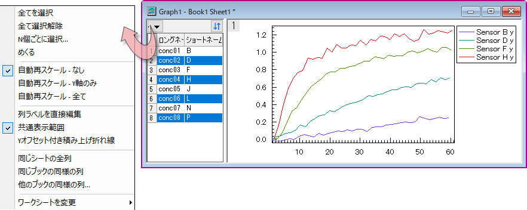
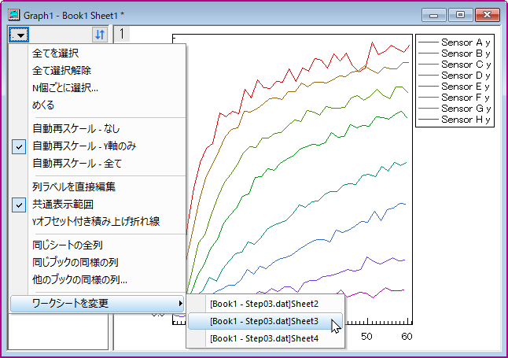

ブラウザパネル付きのグラフ
Graph-Browser
Originのブラウザ付きウィンドウビューグラフは、1つもしくは複数のワークシートからのデータセットを選択的にプロットできます。ブラウザグラフは、ウィンドウの左側にパネルを持ち、このパネルでは、表示データの選択（ランダムまたはパターンで選択）、データ変更での再スケールの制御、全プロットで表示範囲を共通に設定、プロット削除などが可能です。
ブラウザグラフの列入れ替え

- ソースワークシートをアクティブにして、任意の列を選択するか何も選択せずに、作図 > ブラウザ: 黒線/色付き折れ線/ヒストグラム/積み上げ折れ線/積み上げを選択
または
- 一般的な2Dグラフをプロットするには、グラフページの端をクリックし、ポップアップするミニツールバーでブラウザグラフのの列入れ替えボタン
 をクリックしてブラウザパネルを表示します。
をクリックしてブラウザパネルを表示します。
ブラウザグラフのシート/ブック入れ替え
- 一般的な2Dグラフをプロットするには、グラフページの端をクリックし、ポップアップするミニツールバーでブラウザグラフのシート/ブック入れ替えボタンをクリックしてブラウザパネルを表示します。
ブラウザグラフの列入れ替えのコントロール
プロットリストに表示するメタデータ
データ範囲、ショートネーム、ロングネーム、コメント、単位、ブック、シート、列インデックスを含む、プロットリストに表示するメタデータを指定します。シート内の列が26より多く、ロングネームが存在しない場合、ショートネームの代わりに列インデックスが表示されます。
- 行ヘッダを選択すると、プロットの行ヘッダとして行インデックスが表示されます。
- ヘッダをクリックすると、そのデータ情報に従って昇順または降順でプロットを並べ替えます。
- 列ヘッダを右クリックして、列見出しを表示または非表示にします。または、現在の構成をデフォルトとして設定できます（デフォルトに設定）。
ブラウザ積み上げグラフでのデータプロットの表示を同期する
ブラウザ積み上げグラフの場合、メニューには、デフォルトでチェックされている追加のデータプロットの表示を同期メニューオプションがあります。
-
詳細については、以下のブラウザグラフで複数パネルの積み上げグラフを作成するを参照してください。
同じ行列シートの全オブジェクトをリスト表示
1つの行列オブジェクトから等高線図またはイメージプロットを作成してブラウザパネルを表示すると、同じ行列シート内のすべての行列オブジェクトがブラウザパネルに一覧表示されます。リスト内のデータ情報をクリックして、別のマトリックスオブジェクトに切り替えできます。
ブラウザウィンドウのメニューコントロール
ボタンをクリックするとブラウザメニューが表示されます。
|
|
|
| ほとんどのグラフタイプの場合
|
行列から作図された等高線図とイメージプロットの場合
|
プロットを選択してめくる
プロットを選択または選択解除します。メニューを選択して、全プロットを選択、全プロットを選択解除、N個毎に選択できます。そして、めくるダイアログで指定したステップでプロットをめくることもできます。
- 移動ボックスに ステップ長を入力し、右三角または左三角のボタンをクリックしてプロットを参照します。 たとえば、2を入力すると、三角形のボタンをクリックして2つごとのプロットを参照できます。
- または、スライダーをドラッグして前後にブラウズすることもできます。
- エクスポートをクリックしてグラフを動画としてエクスポートダイアログ（Xファンクション = expG2video）を開き、ブラウザグラフを動画（GIF, TIFF, AVI）としてエクスポートします。
自動再スケールモード
自動さ再スケールモードは、再スケールしない、Y方向のみ再スケール、全ての軸で再スケールから指定できます。
列ラベルを直接編集
このオプションをチェックするとブラウザパネルで列ラベルを直接編集できるようになります。
- メニューボタンをクリックして、列ラベルを直接編集を選択して、チェックをマークを付けます。
- コメントを追加したいのにその列が表示されない場合は、列ヘッダを右クリックして、「コメント」の横にチェックマークがついているか確認し、なければ選択してチェックマークを付けると表示されます。
- 列ヘッダをドラッグして順序変更も可能です。
共通表示範囲
すべてのプロットの最小データ範囲を共通表示範囲として使用し、すべてのプロットでこの範囲のデータポイントを表示するかどうかを指定します。

|
ミニチュートリアルで、共通表示範囲がどのように機能するか確認できます。
- サンプルファイル<Origin インストールフォルダ>\Samples\Graphing\Waterfall.datを新しいワークシートにインポートします。
- 最初の行を選択し、右クリックして「ロングネームとして設定」を選択します。
- 全列を選択して、作図> ブラウザ: 色付き折れ線を選択してブラウザグラフを作図します。
- グラフウィンドウの左上にある矢印ボタンをクリックして、共通表示範囲にチェックがついていることを確認します。
- 左パネルで最初のプロット「600」を選択して、データ: 範囲を編集を選択し、以下のように範囲を設定します。
- 左パネルでほかのプロットをクリックして、全てのプロットの表示範囲が上で設定した範囲になっていることを確認できます。
|
このメニュー項目は、LabTalkコマンドの"layer.commonrange=1;"と同じように動作します。
Yオフセット付き積上げ折れ線
折れ線/ヒストグラムブラウザグラフをプロットするときに、このメニュー項目を選択してYオフセットで積み重ねることができます。デフォルトでは、積み上げ折れ線のオフセットは自動で、現在のレイヤの高さの8%です。これは、作図 > ブラウザ: 積み上げ折れ線メニューからプロットされた積み上げ折れ線ブラウザグラフと同じです。
線をグループ化
Yオフセット付き積上げ折れ線が有効な場合、ドロップダウンリストに線をグループ化が表示され、列ラベル行によって折れ線をサブグループ化し、サブグループごとに積み上げことができます。

自動以外のオプションをチェックすると、作図の詳細の積み上げ形式タブの一定/自動のサブグループ内のオフセット（「グループ」タブ内)にチェックが付き、この列ラベル行が作図の詳細のグループタブのサブグループの設定として選択されます。
列の追加
プロットを参照したら、ブラウザのグラフの最初のレイヤに列を追加することができます。
- 同じシートの全列：現在のワークシートの全ての列を現在のグラフレイヤに追加します。積み上げグラフの場合、列はグラフのレイヤ1に追加されます
- 同じブックの同様の列：同じワークブックの同様の列を現在のグラフレイヤに追加します。積み上げグラフの場合、列はグラフのレイヤ1に追加されます
- 他のブックの同様の列：他の選択したワークブックの同様の列を現在のグラフレイヤに追加します。積み上げグラフの場合、列はグラフのレイヤ1に追加されます
ソースワークシートの変更
ブラウザパネルにリストされている全ての列が同じワークシートのものである場合、ワークシートの変更: <ワークシート名> を選択することで、現在のグラフのソースデータを同じデータ構造を持つ別のワークシートに変更できます。

同じデータ構造を持つ一致する全てのワークシートが、ワークシートの変更コンテキストメニューの下にリストされます。
共通Z範囲
このオプションは、行列から作成された等高線図およびイメージプロット専用です。
新しい等高線図またはイメージプロットを作成する場合、このオプションはデフォルトでオンになっています。また、プロットはすべて のプロットの最小および最大Z値をカラーマップレベルの開始および終了として使用します。
Z範囲再スケール
- このオプションにチェックを付ける
- 左側のパネルのプロットリストで任意のプロットをアクティブにし、再スケールボタンをクリックすると、グラフのプロットは、すべて のプロットの最小および最大Z値をカラーマップレベルの開始および終了として使用します。
- このオプションのチェックを外す
- 左側のパネルのプロットリストで任意のプロットをアクティブにし、再スケールボタンをクリックすると、グラフのプロットは、アクティブ なプロットの最小および最大Z値をカラーマップレベルの開始および終了として使用します。
ソート順をレイヤに適用ボタン
ソート順をレイヤに適用ボタンをクリックすると、左側のブラウザパネルから現在のレイヤのプロットに、ソート順が自動的に適用されます。
自動適用をオフにしたい場合は、ボタンをクリックしてプロット順序の並べ替えの自動適用をオフにできます。
パネルのショートカットメニュー
パネルで右クリックしてショートカットメニューを開きます。
- 削除: 選択したプロットを削除します。
- 未選択データの削除: 選択されたデータ以外 を削除します。
- ...に移る: ワークシートに移ってソース列を選択します。
- 新しいグラフを生成: 選択されたプロットの新しいグラフウィンドウを生成します。
 | ...に移るを選択すると、現在のブラウザプロットのソースデータをアクティブにします。そのデータを分離する場合、 (a)選択したワークシート列の1つの列ラベル行領域を右クリックしてコピー（ラベル行を含む）を選択し、(b)新しいワークシートに移動して左上の空セルをクリックしてシート全体を選択してから、(c)貼り付けます。
|
新しいグラフを生成
これを使用して、現在のブラウザの選択をウィンドウビューモードの個別のグラフウィンドウとしてプロットします。
- ブラウザパネルで選択したプロットを右クリックします。
- 新しいグラフを生成を選択します。
ブラウザグラフのシート/ブック入れ替えのコントロール
LabTalkコマンドまたはミニツールバーでシート/ブック入れ替えブラウザを有効にしたら、
- グラフのデータ列が同じシートからのものである場合、ブラウザパネルには、シートでのバッチプロットと同じように、同じ構造を持つ全てのシートがリストされます（列インデックスで列を一致させ、オフセットで識別子を一致させます）。
- グラフのデータ列が同じブックからのものである場合、ブラウザパネルには、ブックでのバッチプロットと同じように、同じ構造を持つ全てのブックがリストされます（列インデックスで列を一致させ、オフセットで識別子を一致させ、インデックスでシートを一致させます）。
このモードでは、シート/ブックリストを含むブラウザパネルは単一選択のみをサポートします。
ブラウザウィンドウのメニューコントロール
ボタンをクリックするとブラウザメニューが表示されます。
- めくる：このコントロールを使用すると、列を入れ替えるブラウザの場合と同様に、リストされているすべてのシートをめくってシートを選択できます。
- 自動再スケール：列を入れ替えるブラウザの場合と同様に、グラフパネルの自動再スケールモードを選択します。
- データフィルタ：同様のシート/ブックをフィルタし、パネルリストにリストします。
シート/ブックリストに表示するメタデータ
パネルリストの列ヘッダを右クリックして、シート/ブックリストに表示するメタデータを選択します。
- デフォルトに設定：シート/ブックをリストする3つのデフォルト設定。シートをリストするには、シート名を選択する必要があります。ブックをリストするには、デフォルトでブック名を選択する必要があります。
- 行ヘッダ：行ヘッダを選択すると、プロットの行ヘッダとして行インデックスが表示されます。
- ブック名：ブックのショートネームを表示します。
- ブックのコメント：ワークブックウィンドウのプロパティダイアログのコメント
- シート名：名前とコメントダイアログに保存されているシート名を表示します。
- シートラベル：名前とコメントダイアログに保存されているシートラベル。
- シートコメント：名前とコメントダイアログに保存されているシートコメント。
シート/ブックのパネルショートカットメニュー
シート/ブックリストの行を右クリックすると、ショートカットメニューが表示されます。
これらのメニュー項目の動きについては、ブラウザグラフの列入れ替えのショートカットメニューを参照してください。
ブラウザグラフで複数パネルの積み上げグラフを作成する
Origin 2021以降、Originは、ブラウザパネルを使用して積み上げ複数パネルグラフを作成することをサポートしています。
- 作図> ブラウザ：積み上げ...メニューを選択して、積み上げ：plotstackbrowserダイアログを開きます。
- グループ化要素として列ラベル行、およびBstackをグラフテンプレートとして選択します。レイヤー間の間隔とパネルの周囲のマージンを設定します。
- OKボタンをクリックして、積み上げグラフを作成します。
| カスタムテンプレートを指定して、ブラウザ積み上げグラフをプロットできます。詳細は、このページのノートをご覧ください。
|
積み上げグラフが作成された後、グループ化要素行にN個の値がある場合、グラフにはN個のレイヤが積み重ねられます。最初のグループ化値でグループ化されたすべてのY列が最初のパネルにプロットされ、同じグループ化値を持つ他の列がグループ化値に従って1つのグラフレイヤに1つずつプロットされます。
ブラウザパネルでは、レイヤ1にプロットされたすべての列が、行ごとにリストされます。
- デフォルトでは、 作図の詳細の同じプロットの表示/非表示コントロールはインデックスに設定されています。これは、一度に1つ以上の列を選択すると、他のレイヤで同じプロットインデックスを持つ他のY列が表示されることを意味します。
- 作図の詳細の同じプロットの表示/非表示コントロールを名前に設定した場合、1つ以上の列を一度に選択すると、他のレイヤで同じ名前（グループ化値）を持つ他のY列が表示されます。
グラフ/レイヤ/プロットでの一般的な操作
右側のパネルでは、軸ダイアログでの軸編集、作図の詳細ダイアログでのプロット形状の設定やレイヤ/グラフへの設定といった、全てのグラフ操作を実行できます。 また、ミニツールバーでの編集操作も可能です。
他の一般的なグラフと同様、解析のダイアログ/ツールを開き、データを分析できます。
次の2つに注意してください。
- 左パネルでプロットを選択すると、作図の詳細ダイアログは左パネルツリーの選択を保持します。
- ブラウザパネルで積み上げグラフをプロットした場合、作図の詳細ダイアログのページレベルのレイヤタブで、
- 同じプロットの表示/非表示は、デフォルトでインデックスに設定されます。つまり、ブラウザパネルで任意のプロットを選択すると、異なるレイヤにあるが同じインデックスのすべてのプロットが表示されます。
- 適用先のレイヤラジオボックスが選択され、付随するドロップダウンリストから除くが選択されます。必要に応じて、上記の一般的な表示設定を適用するときにレイヤ番号を入力して、そのレイヤを除外できます。
-
- オブジェクトマネージャでは、グラフおよびレイヤツリーノードのみ表示し、プロットは全て非表示になります。
データプロットの表示を同期
これらのコントロールは、プロット表示を操作するために使用できます。
-
- ...を同期がチェックされていると、メタデータを表示フライアウトメニューが追加されます。フライアウトを使用してレイヤを選択します。次に、ブラウザパネルのヘッダを右クリックして、表示する列ラベル行の情報（メタデータ）を選択します。次に、プロットリストの行をクリックして、そのデータセットを他のレイヤの関連するプロットと一緒にプロットできます。上記の例では、Delta Temperatureはレイヤ1にプロットされており、したがってブラウザパネルリストに表示されるメタデータです。
-
- ...を同期のチェックを外すと、他のレイヤのプロットに影響を与えることなく、選択したレイヤのプロットのみを編集できます。上記の例では、レイヤ1のみの内容を表示することを選択しました（つまり、ブラウザパネルリストで別のDelta Temperatureデータセットを選択した場合、レイヤ2とレイヤ3のプロットは変更されません。
ミニツールバーでグラフブラウザを表示する
ブラウザの列入れ替え
グラフページのミニツールバーでブラウザグラフの列入れ替えボタンを選ぶとブラウザが表示されます。
ブラウザのシート/ブック入れ替え
グラフページのミニツールバーでブラウザグラフのシート/ブック入れ替えボタンを選ぶとブラウザが表示されます。